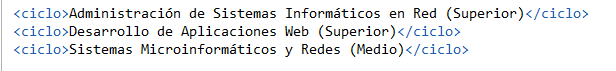
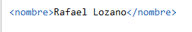
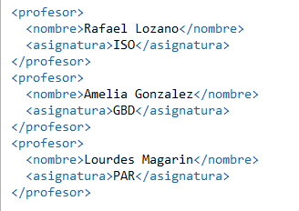
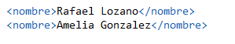
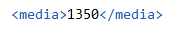
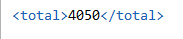
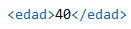
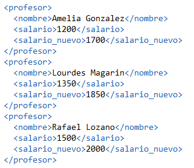
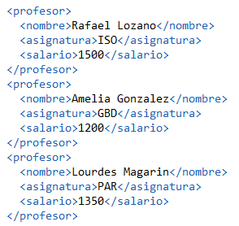
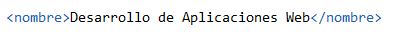

Consultas Instituto
Consulta 1
1.Mostrar el nombre de los ciclos junto al año de decreto.
for $ciclo in doc("Instituto_consultas.xml")/ies/ciclos/ciclo
return {$ciclo/nombre/text()} ({$ciclo/grado/text()})

Consulta 2
2.Mostrar los profesores con salario mayor a 1400.
for $profesor in doc("Instituto_consultas.xml")/ies/profesores/profesor
where $profesor/salario > 1400
return $profesor/nombre

Consulta 3
3.Mostrar el nombre de los profesores y la asignatura que imparten.
for $profesor in doc("Instituto_consultas.xml")/ies/profesores/profesor
order by $profesor/sala
return
{$profesor/nombre}
{$profesor/asignatura}

Consulta 4
4.Muestra el nombre de los profesores con mas de 40 años
for $profesor in doc("Instituto_consultas.xml")/ies/profesores/profesor
where $profesor/edad > 40
return $profesor/nombre

Consulta 5
5.Muestra la media de los salarios de los profesores.
let $profesores := doc ("Instituto_consultas.xml")/ies/profesores/profesor
return {avg($profesores/salario)}

Consulta 6
6.Muestra la suma de los salarios de los profesores.
let $profesores := doc ("Instituto_consultas.xml")/ies/profesores/profesor
return {sum($profesores/salario)}

Consulta 7
7.Muestra cuantos años tiene la profesora Lourdes.
for $profesor in doc("Instituto_consultas.xml")/ies/profesores/profesor
where $profesor/nombre = "Lourdes Magarin"
return $profesor/edad

Consulta 8
8.Muestra el nombre del profesor y su salario añadiendole 500 euros de pagas extras.
for $profesor in doc("Instituto_consultas.xml")/ies/profesores/profesor
order by $profesor/nombre
return
{$profesor/nombre}
{$profesor/salario/text()}
{$profesor/salario + 500}

Consulta 9
9.Mostrar los datos de los profesores excepto su edad.
for $profesor in doc("Instituto_consultas.xml")/ies/profesores/profesor
return {$profesor/* except $profesor/edad}

Consulta 10
10.Mostrar los ciclos que tengan año de decreto mayor de 2009.
for $ciclo in doc("Instituto_consultas.xml")/ies/ciclos/ciclo
where $ciclo/decretoTitulo/@año >2009
return $ciclo/nombre
